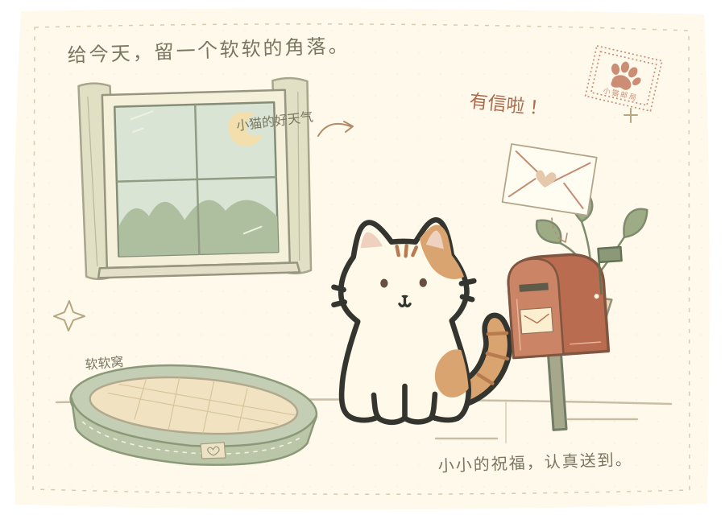

● 一只小猫，一段慢慢来的日子
给日常，添一点
毛茸茸。
它会打盹、会蹭蹭，也会惦记你的生日。
在忙碌的桌面旁，给自己留一个软软的角落。
不用登录 · 浏览器即可体验 · 生日只存在本机

01 / 它的小日子
不必做很多，
陪着就很好。
给它一个名字，选一身喜欢的毛色。
剩下的，就从一次轻轻的摸摸开始。
奶油橘白 · 晒过太阳的颜色

轻轻摸摸，会听到小小的回应。
- 01
把小猫变成你的样子
名字、毛色、眼睛和小表情，
慢慢挑一个合眼缘的。 - 02
摸摸、开饭、打个盹
四个部位有不同回应，
猫粮和罐头，也有不同的小期待。 - 03
小屋里，也有它的生活
窝里蜷成团，桌边趴一会儿。
食物一直都有，离开几天也没关系。
有些话，想写给你。
02 / 小猫邮局
小小的祝福，
也想认真送到。
生日、春节、中秋……
重要的日子，猫窝旁的邮筒会收到一封信。
信角那枚歪歪的小爪印，是它的签名。
这里可以预览生日信。真正的来信，留在你的小窝里。
03 / 制作手记
从一个想法，
到桌边的一只小猫。
一个关于轻度陪伴的个人作品集项目。
从手绘角色、细小的互动，到一封能留下来的信，
探索日常里的情感连接。
下载 Windows 桌宠 ↓
Windows 64 位 · 约 155 MB
完整解压后双击 PawsNest.exe，内附使用说明。
用于修改与开发，需要 Node.js 和依赖。
想直接使用桌宠，请选择上面的 Windows 下载。
小窝生长记录
- 已经住进来的
- 六套毛色与五官定制、部位互动、两种睡姿、
首次领养卡、生日与法定节日来信、本地存档。 - 桌面上的小小陪伴
- Windows 客户端支持透明桌宠、拖动、置顶和托盘；
网页体验里的陪伴窗活动范围限于当前页面。 - 还在慢慢准备的
- 更细腻的 AI 动画、相处习惯与小事件，
以及“从小屋走到真实桌面”的连续演出。
看看实现与设计取舍 ＋
使用可编辑 SVG 与程序动画制作当前角色，网页为无需构建的 HTML / CSS / JavaScript，客户端使用 Electron。历法在本地计算，生日只记录月日。项目由个人构思与迭代，并使用 AI 辅助编码、测试和视觉探索。
公开版本不要求 GPT 账号。桌面端与浏览器分别保存资料；清除本地数据会移除对应存档。AI 视频动画目前仍在验证中。
今天，也可以慢慢来。
去小窝坐一会儿 →